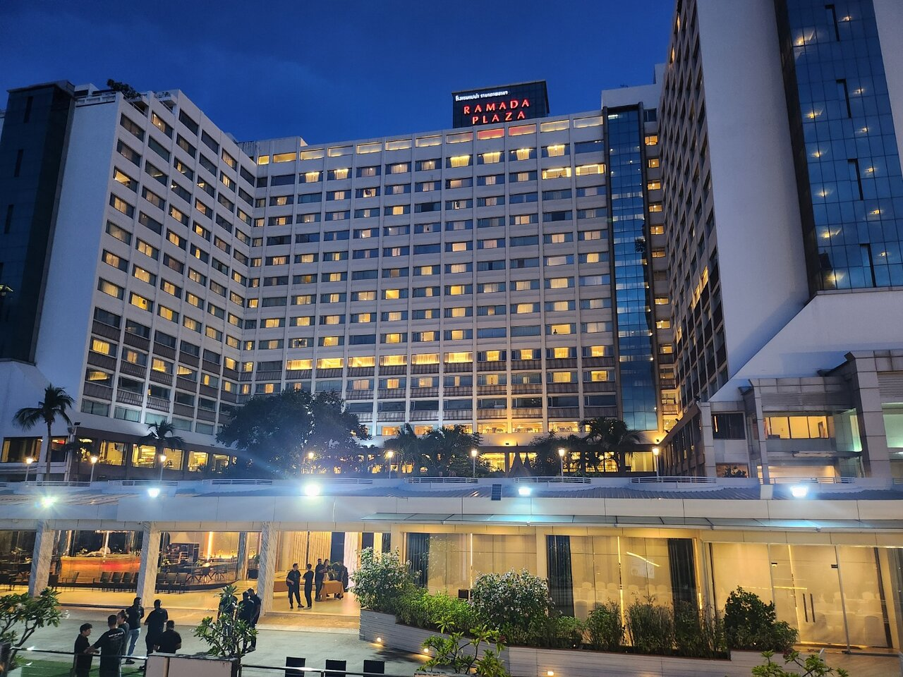

2026 (주)오너 INCENTIVE TOUR
BANGKOK
(주)오너 임직원 여러분 환영합니다
여행 개요
• 일시: 2026년 11월 06일(금) ~ 10일(화) · 3박 5일
• 항공: 에어프레미아 YP 601 / YP 602
• 숙소: 라마다 메남 리버사이드 (또는 동급) · 3박
• 미팅: 11.06(금) 14:50 인천공항 제1터미널
위의 버튼을 클릭하면
상세 내용이 나타납니다.
상세 내용이 나타납니다.
🎒 준비물 및 옷차림
- 여권: 유효기간 6개월 이상 필수 소지
- 전압: 태국은 220V입니다. 한국 플러그(A형) 대부분 사용 가능하나 일부 콘센트는 B/C형이니 멀티 어댑터를 준비하시면 안심입니다.
- 환율: 태국은 바트(THB)를 사용합니다. 페이지 상단의 실시간 환율을 참고하시어 환전해 주세요. 현지 시장·마사지 팁 등은 현금(소액권)이 필요합니다.
- 옷차림: 11월 방콕은 건기 시작으로 낮 최고 32~33℃로 덥고 습합니다. 반팔·얇은 옷을 기본으로 하되, 실내 냉방이 강하니 얇은 겉옷을 챙기세요. 사원 방문 시에는 어깨·무릎을 가리는 복장이 필수입니다(민소매·짧은 반바지 지양).
- 로밍: 호텔 내 와이파이는 가능하나 외부에서는 인터넷이 불가합니다. 통신사 로밍 또는 eSIM·유심을 사전에 준비해 주세요.
✈️ 항공 수하물 규정
| 위탁 수하물 | 1인 23kg 이내 (1개) |
|---|---|
| 기내 반입 | 1인 10kg 이내 (1개) |
- 배터리 내장형 고데기는 위탁·기내 소지 모두 불가
- 반드시 기내 휴대: 보조배터리, 라이터
- ⚠️ 전자담배·베이프(액상형 포함)는 태국 내 반입·소지·사용이 법으로 금지되어 있습니다. 절대 소지하지 마세요(적발 시 벌금·구금 대상).
🧴 태국 입국 면세 한도
| 주류 (술) | 1인 1L 이하 1병 |
|---|---|
| 담배 | 궐련 200개비 (1보루) 이내 |
| 면세품 한도 | 10,000 바트 한도 내 면세 허용 |
| 반입 금지 | 전자담배, 마약류, 음란물 등 |
🗺️ 공항 미팅 안내
- 인천공항 제1터미널 3층 출국장
- 11/06(금) 오후 14:50 미팅
- 현장에서 인솔자·가이드가 안내해 드립니다.

💆 태국 마사지·스파 안내
- 일정 중 헬스랜드(프리미엄 스파) 및 전통 전신 마사지 2시간 체험이 포함되어 있습니다.
- 팁 안내: 마사지사 팁은 자율이며, 통상 2시간 기준 150~200바트 정도를 직접 전달합니다. (요금·팁 불포함)
- 임신 중이거나 고혈압·디스크·골절 등 병력이 있으신 분은 시술 전 반드시 미리 알려주세요.
- 귀중품은 객실 또는 개인이 보관하시고, 시술 후 충분히 수분을 섭취하세요.
🙏 태국 현지 매너 & 팁 문화
- 왕실·불교 존중: 태국은 왕실과 불교를 매우 소중히 여깁니다. 왕실·불상 관련 언행에 각별히 유의해 주세요.
- 사원 방문 복장: 어깨와 무릎을 가리는 옷을 착용하고, 사원 실내 입장 시 신발을 벗습니다.
- 머리와 발: 상대의 머리를 만지지 않으며, 발로 사람이나 물건을 가리키지 않습니다.
- 인사: 두 손을 모아 가볍게 목례하는 '와이(Wai)'가 기본 인사입니다.
- 팁 문화: 호텔 벨보이·룸 클리닝 20바트, 식당·가이드·기사 등에 소액의 팁을 준비하시면 좋습니다.
🏨 [방콕] 라마다 메남 리버사이드
- 차오프라야 강변에 자리한 리버사이드 리조트형 호텔로, 도심 속에서 여유로운 강변 휴양을 즐길 수 있습니다.
- 강 전망과 넓은 야외 수영장, 리버사이드 산책로를 갖추고 있어 인센티브·단체 행사에 적합합니다.
- 호텔 전용 선착장에서 셔틀 보트 이용이 가능해 아이콘시암 등 주요 명소로의 이동이 편리합니다.
- 전 일정 동안 동일 호텔에서 3박하여 매일 짐을 옮기는 번거로움이 없습니다.

제1일차 · 11월 6일 (금)
- 14:50 인천공항 제1터미널 미팅
- 17:15 에어프레미아 YP 601편 인천 출발
- 21:25 방콕 도착
- 전용버스로 가이드 미팅 후 호텔로 이동
- 호텔 Check-in 및 휴식
식사
조 : - / 중 : - / 석 : 기내식
조 : - / 중 : - / 석 : 기내식
제2일차 · 11월 7일 (토)
- 호텔 조식 후 가이드 미팅
- 10:30 아이콘시암(ICONSIAM)
- 차오프라야강의 아름다운 전망과 태국 전통 수상시장·맛집을 품은 태국 최대 규모의 복합 문화공간이자 방콕의 랜드마크 - 13:00 중식 (현지식 : 사보이 레스토랑)
- 14:30 헬스랜드 태국 전통 전신 마사지 2시간 체험 (팁 불포함)
- 태국을 대표하는 프리미엄 마사지 & 스파 브랜드로 수준 높은 서비스 제공 - 17:30 아시아틱 야시장
- 차오프라야 강변에 위치한 현대식 야시장으로 방콕의 새로운 랜드마크 - 19:30 디너크루즈
- 아름다운 차오프라야강의 야경을 감상하며 즐기는 선상 만찬 - 호텔 투숙
식사
조 : 호텔식 / 중 : 현지식(사보이 레스토랑) / 석 : 현지식(디너크루즈)
조 : 호텔식 / 중 : 현지식(사보이 레스토랑) / 석 : 현지식(디너크루즈)
제3일차 · 11월 8일 (일)
- 호텔 조식 후 09:00 가이드 미팅하여 아유타야로 이동 (약 1시간 30분)
- 유네스코 세계문화유산 '아유타야' 사원 관광
- 왓 마하탓, 왓 프라시산펫, 왓 야이 차이 몽콘 사원 방문. 아름다운 고대 사원과 유적을 만나는 태국 대표 관광지 - 중식 (현지식 : MK 수끼)
- 코끼리 트레킹
- 태국을 상징하는 코끼리를 직접 타보는 체험 - 방파인 여름 별궁
- 동서양 건축미가 어우러진 아름다운 왕실 휴양지 - 방콕으로 귀환
- 석식 (호텔 만찬 및 세미나) 후 호텔 투숙
식사
조 : 호텔식 / 중 : 현지식(MK 수끼) / 석 : 호텔 만찬
조 : 호텔식 / 중 : 현지식(MK 수끼) / 석 : 호텔 만찬
제4일차 · 11월 9일 (월)
- 호텔 조식 후 Check-out
- 10:00 호텔 선착장에서 보트 탑승, 차오프라야강 수상문화 로컬 탐험
- 롱테일보트를 타고 차오프라야 수로의 주요 포인트 방문
- 왓빡남 황금불상 사원(높이 69m의 찬란한 황금불상), 톤부리 예술가 마을, 딸랏 플루 로컬 마켓 - 중식 (현지식 : 루안톤 레스토랑)
- 빅씨(Big C) 마켓
- 태국 대표 대형 마트에서 식료품·기념품 쇼핑 - 태국 전통 전신 마사지 2시간 체험 (팁 불포함)
- 석식 (씨푸드 뷔페 : 콧탈레 해산물 뷔페)
- 공항으로 이동
- 22:55 에어프레미아 YP 602편 방콕 출발
식사
조 : 호텔식 / 중 : 현지식(루안톤) / 석 : 씨푸드(콧탈레 뷔페)
조 : 호텔식 / 중 : 현지식(루안톤) / 석 : 씨푸드(콧탈레 뷔페)
제5일차 · 11월 10일 (화)
- 06:35 인천공항 도착
- 입국 수속 후 해산 · 여정 종료
식사
조 : 기내식 / 중 : - / 석 : -
조 : 기내식 / 중 : - / 석 : -